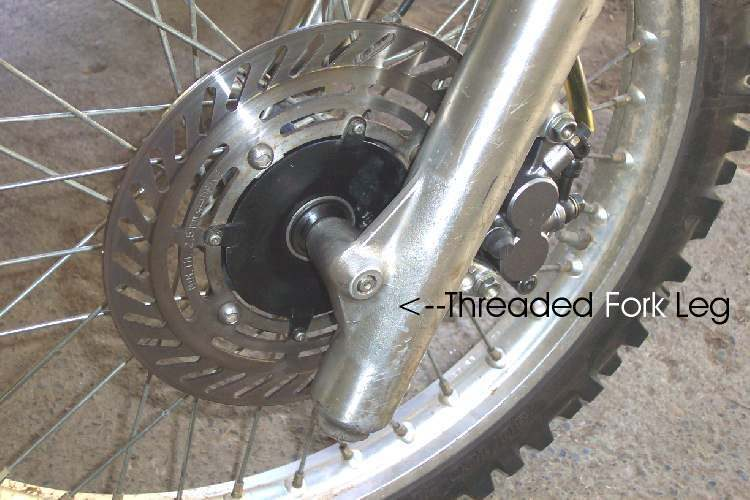

The front wheel is the rim, the hub in its centre and either spokes or cast alloy arms joining them. The hub carries two bearings, the axle runs through them, and the brake disc or drum is fixed to one side. The tyre sits on the rim.
What it does
The wheel carries the front of the bike, steers it and takes the full force of the front brake. It must run straight and round. Potholes dent rims and bend them; loose spokes let the rim go out of true; worn bearings let the wheel rock on the axle.
Signs it is worn or failing
- Wobble when spinning: Wheel is buckled or wobbles.
- Dent or crack in the rim: Rim is dented or cracked. A cracked rim: stop riding.
- Rocks on the axle: Wheel moves sideways on the axle.
- Rumble or grinding: Rumbling or grinding from a wheel.
- Vibration at speed: Vibration at certain speeds.
- Spokes loose or broken: Spokes are loose or broken.
When to replace it
Replace a cast wheel that is cracked or bent beyond the runout limit; cast wheels should not be straightened or welded. A spoked rim that is badly bent is replaced and the wheel rebuilt.
What to match when buying
- Most people buy Wheel bearings, a Front tyre, Spokes and nipples, a Tyre valve or Wheel axle and spacers.
- A complete wheel must match make, model and year, brake type (disc or drum), rim size and tubeless or tube type.
- Rim size code, for example 1.85×17: rim width in inches × diameter in inches. The tyre must suit both.
- Rims marked "TL" or "tubeless" can take tubeless tyres; spoked rims usually need a tube.
Fitting notes
- Remove and refit the front wheel. Note spacer positions before removal.
- Check runout: Check a wheel for runout.
- Axles differ: some pass through both legs with a nut, others screw into one leg, and many have pinch bolts or nuts as well. Check which type before loosening anything.
- Check where the speedometer drive sits before the wheel comes out and refit it in the same position. Tighten the axle slowly by hand so a binding drive is felt before it breaks.
- On a drum brake wheel, snug the axle, spin the wheel, press the brake on hard and hold it, then tighten fully. This centres the shoes.
- Handle plastic disc or fork protectors gently. Old plastic goes brittle and is hard to replace.
Reference (K-Light 125)
| Item | Value | PDF page |
|---|---|---|
| Rim | 1.85×17, aluminium alloy | 72, 130 |
| Rim runout limit | 2.0 mm vertical and lateral | 130 |
| Hub bearings | 6202-2RS | 130 |
| Front axle nut (M14×1.5) | 75 to 88 N·m | 130 |